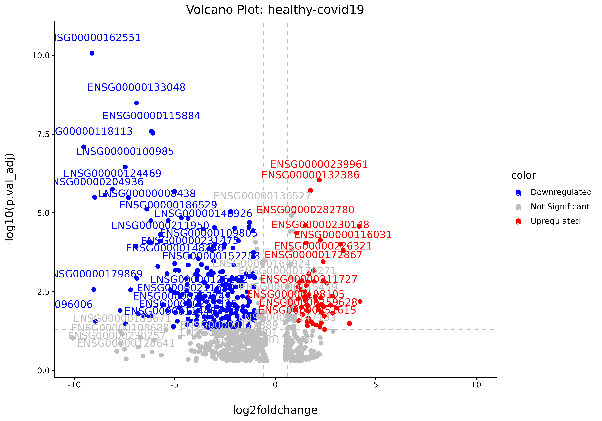
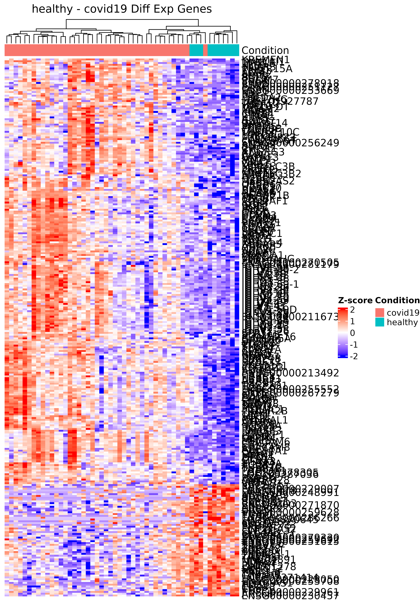
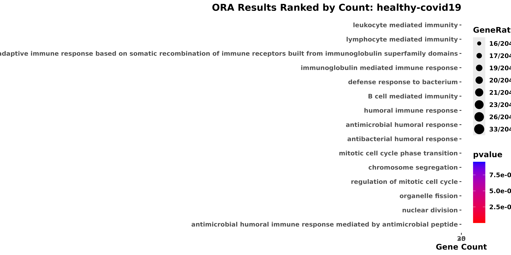
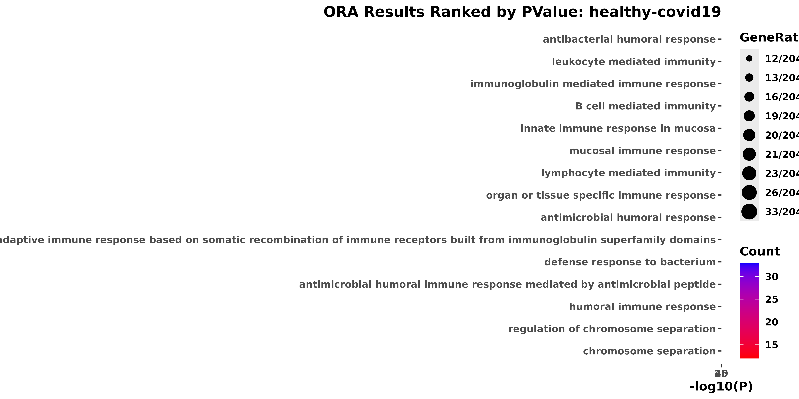

bulkanalysis_demo
bulkanalysis_demo_ver2.Rmd
#devtools::install_github("https://github.com/rumchada/bulkanalysis_repo")Introduction
The purpose of the bulkanalysis package is to streamline the downstream analysis of bulk RNA-seq data by providing a collection of commonly used analysis and visualizations in a single package. The package was developed as a wrapper around statistical and visualization methods that I have frequently encountered during my experience analyzing bulk RNA-seq data. Rather than introducing new statistical methods, bulkanalysis is designed to reduce repetitive coding and provide a consistent workflow for obtaining commonly used downstream results. This package performs techniques such as differential expression via edgeR with traditional outputs such as heatmaps, volcano plots. As well as over-representation analysis via clusterProfiler using Fishcher’s Exact Test with summarized output visuals (As of 9/17/26).
The raw results and output visuals are accessible by either executing
the individual functions or through the
bulkanalysis::run_de_pipeline()}’s nested list output.This
vignette below will go into detail on the inputs necessary for the
bulkanalysis::run_de_pipeline() and the outputs of
functions. The overall goal of this package is to save time on initial
biological inferences of bulk-RNAseq experiments by cutting out
repetitive coding, visualization building, and parsing through large
noise of large statistical results. Delivering summarized results for
faster interpretations of your data. By combining these steps into
reusable functions, the package provides summarized results that can be
used to more efficiently explore potential biological patterns in the
data. These results are intended to support initial biological
interpretation rather than replace more comprehensive statistical or
biological investigation.
Input Data First we need to format a random bulk-RNAseq dataset that
has been pre-processed (from FASTQ files), but unnormalized counts to
enter into a DESeqDataSet
via RNAseqQC::make_dds(). This is because make_dds() does
not accept continuous counts. Which requires at minimum a count matrix
in the matrix class from base-r and meta-data table with
following columns:
sample_names: The names of the samples of your
bulk-RNAseq experiment in the same exact arrangement and character
format (capitlaize/lower_case).
sample_condition: which tells the experimental condition
of your samples.
These inputs can then be provided to
bulkanalysis::edgeR_diffexp() to perform pairwise
differential expression analysis between experimental conditions. A
reference condition is specified so that the resulting comparisons are
interpreted relative to a defined baseline. In many experiments, this
reference may be a condition such as control or healthy, although the
appropriate reference depends on the experimental design.
Bulk-RNASeq Formatting
This section will show you how to prepare a random dataset from GEO Query for the bulkanalysis package functions. GEO202805 will be used to prepare a DESeqDataSet object compatible with the rest of functions in the bulk analysis package.
GEO202805 Summary
RNA sequencing was performed on a total of 80 PBMC samples derived from healthy controls (n = 10), acute-Mild (n = 4), Acute-Moderate (n = 6), Acute-Severe (n = 32) and Convalescent = 28. For this
Citation: Minghan,.L , Yuqing,.S, Yizhou,.T, Yuefan,.L, Weidong,.T, ” Global Transcriptomic analysis of PBMC derived from COVID-19 acute-severe patients and convalescents”, (May, 2022),PRJNA837285; GEO: GSE202805.
Downloading GEOquery Data
Check meta data for which groups you would like set the comparisons to.For this demonstration we will be binning the all the acute covid-19 samples (mild, moderate, severe). In your metadata, you can partition each of these labels in a more granular fashion.
#checking if path exists
path <- "./GSE202805/GSE202805_genecounts_20220406.txt.gz"
counts <- utils::read.delim(gzfile(path))
colnames(counts) <- base::sub("\\.bam$", "", colnames(counts))
#Some dataset will still come with the sorted bam file that outputs from command line functions such as featureCounts (subread)
#The columns being deleted are not necessary unless we are integrating ChIP or ATAC data.
counts <- counts %>% dplyr::select(-c(Chr, Start, End, Strand, Length))
# contains the count vectors of the 8 samples
#Some dataset will still come with the sorted bam file that outputs from command line functions such as featureCounts (subread)
#counts[1:10, 1:10]
knitr::kable(counts[1:10, 1:10])| Geneid | R11255 | R11257 | R11259 | R11260 | R11263 | R11265 | R11266 | R11268 | R11273 |
|---|---|---|---|---|---|---|---|---|---|
| ENSG00000223972.5 | 46 | 69 | 20 | 42 | 182 | 13 | 10 | 47 | 5 |
| ENSG00000227232.5 | 62 | 77 | 93 | 68 | 98 | 101 | 141 | 84 | 99 |
| ENSG00000278267.1 | 1 | 5 | 0 | 0 | 11 | 2 | 5 | 1 | 3 |
| ENSG00000243485.5 | 0 | 0 | 0 | 0 | 0 | 0 | 0 | 6 | 0 |
| ENSG00000284332.1 | 0 | 0 | 0 | 0 | 0 | 0 | 0 | 0 | 0 |
| ENSG00000237613.2 | 0 | 0 | 0 | 0 | 0 | 0 | 0 | 0 | 0 |
| ENSG00000268020.3 | 0 | 0 | 0 | 0 | 0 | 0 | 0 | 0 | 0 |
| ENSG00000240361.2 | 0 | 0 | 0 | 0 | 0 | 0 | 0 | 0 | 0 |
| ENSG00000186092.6 | 0 | 0 | 0 | 0 | 0 | 0 | 2 | 0 | 0 |
| ENSG00000238009.6 | 1 | 0 | 1 | 6 | 1 | 0 | 5 | 12 | 0 |
Some datasets will still come within the sorted bam file that outputs from command line functions such as featureCounts (subread). In case that happens use the select(-c()) to get rid of columns such as Chr, Start, End, Strand, Length. Which useful if you have genomic (ChIP)or epigenomic (ATAC). However we will have to use tidyverse on the metadata table to only the basic relevant columns.
Meta-Data Editing
# summarizing replicated genes across all samples
counts <- counts %>%
group_by(geneid) %>%
summarise(across(where(is.numeric), sum))
counts <- counts %>% column_to_rownames(var = "geneid")
metadata[] <- lapply(metadata, factor)| sample | condition |
|---|---|
| R11257_covid19 | covid19 |
| R11259_covid19 | covid19 |
| R11260_covid19 | covid19 |
| R11263_covid19 | covid19 |
| R11265_covid19 | covid19 |
| R11266_covid19 | covid19 |
| R11268_covid19 | covid19 |
| R11273_covid19 | covid19 |
| R11276_covid19 | covid19 |
| R11279_covid19 | covid19 |
Making DDS Object
make_dds(): Make DESeqDataSet from counts matrix and metadata.
Per transcript counts of RNA-seq exhibit a mean-variance relationship (hetroscedastic). However many tests within RNA-seq pipeline require non-hetroscedastic data. Normalizations are require to smooth the variation of the data. Normalization scales the raw count of values to account for the technical batch effects between samples. This way expression level are comparable between and within samples.
vst() (wrapper for
DESeq2::varianceStabilizingTransformation()):
variance stabilizing transformation transforms normalizes count data to
reduce the dependence between the mean and variance. This produces an
approximately homoscedastic representation of the data, making it more
appropriate for exploratory analyses based on distances or correlations,
such as PCA and clustering. The transformed values are intended for
exploratory analysis and visualization rather than
differential-expression testing.The result is applied to the
bulkanalysis::baseline_dimreduction() function.
Log normalization: The typical distribution of bulk-RNAseq data follows a Poisson (Var = mean) or a Negative Binomial Distribution (Var > Mean) For data containing a large amount of zeros, the log transformation serves to minimize the frequency of zeroes relative to transcripts with counts >= 1. This will help to visualize the data though a normal distribution. This is typcial are typical for scRNA-Seq and ST data. To avoid taking the log of 0, it is common to add a +1 pseudo value.
More information on Normalization
Note: These transformations are not used within the differential expression analysis. This is because packages such as EdgeR and DESeq2 are built to take into account for the typical Poisson or Negative Binomial distribution.
# saveRDS does not work in the vignette build
#saveRDS(covid19_ds1,"./vignette_data/gse202805_test_data.rds")Bulk Analysis Demonstration
standardization of meta-data labels.
# In some scenarios, you will need to standardize your condition
covid19_ds1@colData$condition <- covid19_ds1@colData$condition %>% tolower()EdgeR Based Differential Expression
Performs EdgeR based differential expression with limma support of each covariate specified in your meta-data with user set reference variable for pairwise differential expression of each sample condition within the submitted meta-data of your formatted Deseqdataset object. This is a standard pipeline sourced from Daniel Neves and Daniel Sobral, “Using DESeq2 and edgeR in R”, (April, 2018) vignette
1. Extracts Raw counts
filters for low count genes within your count matrix and keeps sufficiently large counts to be retained in a statistical analysis (
edgeR::filterByExpr(y)). Filtering is performed with respect to the experimental design/replication structure, rather than using an arbitrary fixed count cutoff.edgeR::normLibSizes(y)calculates normalization factors, commonly using TMM.(TMM normalization viaedgeR::normLibSizes(y)). These factors adjust the effective library sizes so that samples are comparable despite differences in sequencing depth and RNA composition.Re-affirms reference level relative to the experimental covariate
-
set design matrices as mean reference model expression = B1(reference)m + B2(experiemnt) for each pairwise combination of conditions in the metadata.
design <- model.matrix(~0+condition, data = y$samples).the model estimates the mean expression associated with each condition, and contrasts between those coefficients define the desired comparisons. THIS IS NOT THE PRIMARY COMPARISON ONLY FOR DESIGN MATRIX CONTRSUCTION.
6.5: Estimates variability of each gne in the count data
- Set limma::makeContrats() for each comparison of contrasts vectors
to be applied in the
edgerR::glmQLFit()function.
For each contrast (comparison (reference vs x) and vector)
7. edgerR::glmQLFit() which fits the negative binomial generalised linear model using quaisi-liklihood methods and determines whether the observes group difference are larger than expected variability.
8.Applies either Family Wise Error(‘bonferonni’) or False Discovery Rate(‘BH’) pvalue correction
- Applies user filter of initial p.adjust value. Default is no filter applied.
Output: A list object of data frames containing each possible combination of binary #’ comparisons (control vs. experimental group) within the supplied metadat
dds_object <- covid19_ds1
#Add the condition column name
condition_col = "condition"
#set a refreence group name
ref_group_name = "healthy"
#Performs inital differential expression on your DDS Object's raw counts dataframe
# The use give the condition column from the metadata to make the test parameters
# and the control group
results_dds1 <- edgeR_diffexp(covid19_ds1,
condition_col,
ref_group_name,
init_pval_cutoff = 0.5,
adjust.method = "bonferroni")Result is a list of tables with details on the differences of gene expression between genes through each of samples in the count matrix.
healthy_covid19_results <- results_dds1$`healthy-covid19`
healthy_covid19_results <- results_dds1$`healthy-covid19`
knitr::kable(results_dds1$`healthy-convalescent`[1:10, 1:ncol(healthy_covid19_results)])| geneid | log2foldchange | logCPM | F | PValue | p.val_adj |
|---|---|---|---|---|---|
| ENSG00000272173 | -3.758680 | 0.1629976 | 147.29132 | 0 | 0 |
| ENSG00000200156 | -4.682367 | -0.0290629 | 112.20243 | 0 | 0 |
| ENSG00000287190 | -4.380503 | 1.0329132 | 114.76031 | 0 | 0 |
| ENSG00000207205 | -4.077849 | -0.0275487 | 91.80691 | 0 | 0 |
| ENSG00000111678 | -3.617110 | 3.3322679 | 118.53750 | 0 | 0 |
| ENSG00000212195 | -3.830325 | 1.0317549 | 81.25352 | 0 | 0 |
| ENSG00000270022 | -3.805682 | 2.3153486 | 90.55365 | 0 | 0 |
| ENSG00000200169 | -3.517921 | 0.2384656 | 76.09676 | 0 | 0 |
| ENSG00000276216 | -3.496121 | 0.6214368 | 73.98809 | 0 | 0 |
| ENSG00000221539 | -2.292173 | 1.7619859 | 71.95162 | 0 | 0 |
Running the whole DE Downstream pipeline
Inputs: the DDS object, Results of the EdgeR Differential Expression analysis
Arguments:
dds_object:A formatted DESeq2 object where each sample and its counts are aligned with the respective metadata in@colData.edgeR_results: A dataframe of differential expression results (minimum columns: log2fc, pvalue, p.adjust) DEG statisitcal inputsdeg_log2fc_thresh: absolute value cutoff of log2fcdeg_pval_adj_thresh: pvalue cutoff for initial log2fc values
Volcano Plots Arguments
vol_plot_lower_xlim: Numeric value specifying the lower limit of the x-axis. Should be less than 0. For example,-5.vol_plot_upper_xlim: Numeric value specifying the upper limit of the x-axis. Should be greater than 0. For example,5.cartesian_step: Numeric value specifying the interval between x-axis ticks.
ORA Arguments
ora_pval_adj_threshold: pvalue cutoff of the over-representation testora_convert_ids: Boolean option to convert the gene IDs from Ensemble to External formatorgdb: An organism-specific annotation database used to facilitate gene identifier conversion, such as org.Hs.eg.db for human or org.Mm.eg.db for Mus Musculous.ensembl_dataset: Character string specifying the Ensembl dataset used for annotation. For example,"hsapiens_gene_ensembl"for human genes.
library(org.Hs.eg.db)
#>
covid19_ds1_analysis <- run_de_pipeline(
covid19_ds1,
results_dds1,
deg_log2fc_thresh = 1,
deg_pval_adj_thresh = 0.05,
vol_plot_lower_xlim = -10,
vol_plot_upper_xlim = 10,
cartesian_step = 5,
ora_pval_adj_threshold = 0.10,
orgdb = org.Hs.eg.db,
ensembl_dataset = "hsapiens_gene_ensembl"
)
#>
#>
#> Processing: healthy vs convalescent
#> [1] 114
#> Comparison:healthy vs convalescent has 114 DEGs
#> Comparison:healthy vs convalescent has 114 DEGs
#> biomaRt attempt 1 of 2...
#> -> biomaRt attempt 1 failed: HTTP 405 Method Not Allowed.
#> biomaRt attempt 2 of 2...
#> -> biomaRt attempt 2 failed: HTTP 405 Method Not Allowed.
#> 'select()' returned 1:many mapping between keys and columns
#> Comparison:healthy vs convalescent has 114 UNIQUE DEGs
#> Processing: healthy vs covid19
#> [1] 297
#> Comparison:healthy vs covid19 has 297 DEGs
#> Comparison:healthy vs covid19 has 297 DEGs
#> biomaRt attempt 1 of 2...
#> -> biomaRt attempt 1 failed: HTTP 405 Method Not Allowed.
#> biomaRt attempt 2 of 2...
#> -> biomaRt attempt 2 failed: HTTP 405 Method Not Allowed.
#> 'select()' returned 1:many mapping between keys and columns
#> Comparison:healthy vs covid19 has 297 UNIQUE DEGs
#> Processing: convalescent vs covid19
#> [1] 1409
#> Comparison:convalescent vs covid19 has 1409 DEGs
#> Comparison:convalescent vs covid19 has 1409 DEGs
#> biomaRt attempt 1 of 2...
#> -> biomaRt attempt 1 failed: HTTP 405 Method Not Allowed.
#> biomaRt attempt 2 of 2...
#> -> biomaRt attempt 2 failed: HTTP 405 Method Not Allowed.
#> 'select()' returned 1:many mapping between keys and columns
#> Comparison:convalescent vs covid19 has 1407 UNIQUE DEGs
#>
#> 'select()' returned 1:many mapping between keys and columns
#> Warning in bitr(gene, fromType = fromType, toType = "ENTREZID", OrgDb = OrgDb):
#> 5.26% of input gene IDs are fail to map...
#> 'select()' returned 1:many mapping between keys and columns
#> Warning in bitr(gene, fromType = fromType, toType = "ENTREZID", OrgDb = OrgDb):
#> 19.35% of input gene IDs are fail to map...
#> 'select()' returned 1:many mapping between keys and columns
#> Warning in bitr(gene, fromType = fromType, toType = "ENTREZID", OrgDb = OrgDb):
#> 46.36% of input gene IDs are fail to map...
#> Warning: Using size for a discrete variable is not advised.
#> Using size for a discrete variable is not advised.
#> 'select()' returned 1:many mapping between keys and columns
#> Warning in bitr(gene, fromType = fromType, toType = "ENTREZID", OrgDb = OrgDb):
#> 33.68% of input gene IDs are fail to map...
#> 'select()' returned 1:many mapping between keys and columns
#> Warning in bitr(gene, fromType = fromType, toType = "ENTREZID", OrgDb = OrgDb):
#> 4.26% of input gene IDs are fail to map...
#> 'select()' returned 1:many mapping between keys and columns
#> Warning in bitr(gene, fromType = fromType, toType = "ENTREZID", OrgDb = OrgDb):
#> 8.92% of input gene IDs are fail to map...
#> Warning in bitr(gene, fromType = fromType, toType = "ENTREZID", OrgDb = OrgDb):
#> Using size for a discrete variable is not advised.
#> Warning in bitr(gene, fromType = fromType, toType = "ENTREZID", OrgDb = OrgDb):
#> Using size for a discrete variable is not advised.
#> Warning in bitr(gene, fromType = fromType, toType = "ENTREZID", OrgDb = OrgDb):
#> Using size for a discrete variable is not advised.
#> Warning in bitr(gene, fromType = fromType, toType = "ENTREZID", OrgDb = OrgDb):
#> Using size for a discrete variable is not advised.
#> Warning in bitr(gene, fromType = fromType, toType = "ENTREZID", OrgDb = OrgDb):
#> Using size for a discrete variable is not advised.
#> Warning in bitr(gene, fromType = fromType, toType = "ENTREZID", OrgDb = OrgDb):
#> Using size for a discrete variable is not advised.Outputs
The outputs of the run_de_pipeline are described below
filtered_results: The initial filtered result of DEGs
log2fc and pval_adj_threshold.
Columns:
`log2FC`: The log2-scaled fold change of a given gene across the #’ specified samples.
P-value: The probability of obtaining data as extreme as the #’ observed values assuming that the null hypothesis is true.Q-value (FDR or FWER): The proportion of false positives after accounting #’ for multiple testing.
library(glue)
#>
#> Attaching package: 'glue'
#> The following object is masked from 'package:SummarizedExperiment':
#>
#> trim
#> The following object is masked from 'package:GenomicRanges':
#>
#> trim
#> The following object is masked from 'package:IRanges':
#>
#> trim
demo_results <-covid19_ds1_analysis$filtered_results$`healthy-covid19`
knitr::kable(glue("Total DEGs in healthy vs covid-19 comparison: {dim(demo_results)[1]}"))| x |
|---|
| Total DEGs in healthy vs covid-19 comparison: 297 |
| geneid | log2foldchange | logCPM | F | PValue | p.val_adj | color |
|---|---|---|---|---|---|---|
| ENSG00000162551 | -9.118798 | 6.856737 | 78.45615 | 0 | 0.0e+00 | Downregulated |
| ENSG00000133048 | -6.905306 | 5.218843 | 68.07271 | 0 | 0.0e+00 | Downregulated |
| ENSG00000115884 | -6.160175 | 2.477781 | 60.79484 | 0 | 0.0e+00 | Downregulated |
| ENSG00000164047 | -6.088636 | 3.020350 | 60.42745 | 0 | 0.0e+00 | Downregulated |
| ENSG00000118113 | -9.529849 | 5.969254 | 61.74041 | 0 | 1.0e-07 | Downregulated |
| ENSG00000100985 | -7.470679 | 4.830199 | 56.52675 | 0 | 3.0e-07 | Downregulated |
| ENSG00000239961 | 2.190019 | 3.949011 | 57.74562 | 0 | 9.0e-07 | Upregulated |
| ENSG00000124469 | -8.100826 | 5.663755 | 52.63149 | 0 | 1.7e-06 | Downregulated |
| ENSG00000132386 | 1.754871 | 3.729244 | 55.18782 | 0 | 1.9e-06 | Upregulated |
| ENSG00000229314 | -5.010021 | 1.539478 | 48.83306 | 0 | 2.1e-06 | Downregulated |
run_de_pipeline outputs
volcano_plots: visualization of the filtered results on
a volcano plot
heatmap:
ora_up_raw: Result of the over-representation analysis
on upregulated DEGs via clusterProfiler
unpacked_results_up: unpacked results table consisting of a
nested list of ORA results on the upregulated DEGs
ora_down_raw: Result of the over-represenation analysis
on downregulated DEGs via clusterProfiler
unpacked_results_down: unpacked results table consisting of
a nested list of ORA results on the down-regulated DEGs
Volcano Plot
ScatterPlot that shows the each DEGs importance on a volcano plot (log2FC vs -log10(p.val_adj)) within 1 Comparison.
covid19_ds1_analysis$volcano_plots$`healthy-covid19`
Heatmaps
Uses ComplexHeatMap to compare z-scaled expression of DEGs from the filtered results table. By adjusting the dimensions of the R image window, the heatmap can edited so that he words can be either spaced out and edited on photoshop later.
covid19_ds1_analysis$heatmap$`healthy-covid19`
ORA DotPlot Summary for Up Regulated and DownRegulated DEGs
Summarizes the the statistical significance and the count of each DEG in an over-represented term.
covid19_ds1_analysis$ora_down_raw$enrichgo_visuals$`healthy-covid19`
#> $ora_count_ranked
#> $ora_count_ranked[[1]]
#> Warning: Using size for a discrete variable is not advised.
#>
#> $ora_count_ranked[[2]]
#> ORA Results Ranked by Count: healthy-covid19.png
#>
#>
#> $ora_pvalue_ranked
#> $ora_pvalue_ranked[[1]]
#> Warning: Using size for a discrete variable is not advised.
#>
#> $ora_pvalue_ranked[[2]]
#> ORA Results Ranked by PValue: healthy-covid19.pngFuture Work
Implement GSEA
Protein-Protein Interaction Network
New ORA visuals:
Radial Upset Plot,
ORA network visual for centrality.
Citations
- Mark D. Robinson, Davis J. McCarthy, Gordon K. Smyth, edgeR: a Bioconductor package for differential expression analysis of digital gene expression data, Bioinformatics, Volume 26, Issue 1, January 2010, Pages 139–140, https://doi.org/10.1093/bioinformatics/btp616
- Wu T, Hu E, Xu S, Chen M, Guo P, Dai Z, Feng T, Zhou L, Tang W, Zhan L, Fu x, Liu S, Bo X, Yu G (2021). “clusterProfiler 4.0: A universal enrichment tool for interpreting omics data.” The Innovation, 2(3), 100141.doi:10.1016/j.xinn.2021.100141.
- Love MI, Huber W, Anders S (2014).“Moderated estimation of fold change and dispersion for RNA-seq data with DESeq2.”Genome Biology, 15, 550.doi:10.1186/s13059-014-0550-8.
- Minghan,.L , Yuqing,.S, Yizhou,.T, Yuefan,.L, Weidong,.T, ” Global Transcriptomic analysis of PBMC derived from COVID-19 acute-severe patients and convalescents”, (May, 2022),PRJNA837285; GEO: GSE202805.